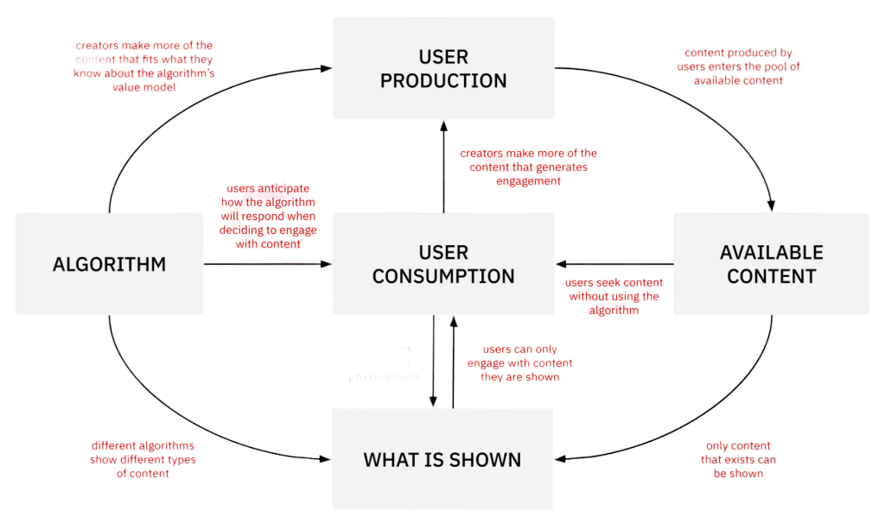

Date: 03-October-2023
I was assisted by: W3Schools(for the dropdown menu).
They function as the invisible hand behind personalized content suggestions on various online platforms, from social media to e-commerce websites. These algorithms operate by closely tracking and analyzing user interactions, such as clicks, likes, shares, and viewing durations, and subsequently constructing individualized user profiles that encapsulate their preferences and behaviors. In parallel, they create profiles for the content available on the platform, categorizing it by attributes like subject matter or popularity. The primary role of these algorithms is to match the user's profile with content profiles and present recommendations based on this alignment.
The concept of the feedback loop within recommendation algorithms plays a pivotal role in how these systems function. This mechanism entails that when a user engages with specific content, such as liking, sharing, or watching, the algorithm takes note and subsequently suggests similar content. The objective is to refine and customize recommendations to align with the user's preferences and behavior over time. However, this practice, while intending to improve the user experience, also carries the risk of creating what is commonly referred to as a "filter bubble" or "echo chamber." This phenomenon occurs when users are consistently exposed to a limited range of content, effectively narrowing their digital horizons. In this context, the feedback loop is a double-edged sword, enhancing personalization but potentially limiting the diversity of content to which users are exposed. As a result, it is crucial to strike a balance between providing tailored recommendations and ensuring users are exposed to a broad spectrum of content, thus mitigating the adverse effects of over-personalization.
The debate around the role of social media algorithms in spreading conspiracy theories and extreme content. While YouTube's algorithm has faced criticism for potentially leading viewers towards radical content, the precise impact of algorithms on radicalization is challenging to determine. Research points to how radical communities on the fringes of the web can create and promote conspiracy theories, which then trend on social media. YouTube made efforts to clean up its platform in response to pressure but continued to recommend conspiratorial videos to viewers. Some studies suggest that conspiracy channels may not receive significant traffic from recommendations. The inner workings of social media algorithms remain a closely guarded secret. Instead of seeing audiences as passive, it's important to recognize their active role in engaging with and even propagating conspiracy theories, which can move from the deep web to mainstream audiences. These theories are used for indoctrination and radicalization and often align with populist political rhetoric. The article also touches on the role of far-right online communities in promoting conspiracy theories, citing examples like Pizzagate and QAnon, and the collective labor involved in constructing these theories. It suggests that while algorithms may play a part, the real issue is political polarization rather than algorithmic manipulation.
An incentive is a way to motivate people by offering rewards that drive them to act in a particular manner. There exist various types of incentives, such as bonuses, commissions, contests, and goals, each designed to encourage individuals to excel in their roles or attain specific objectives. While some incentives involve giving out cash rewards, others provide non-monetary benefits like gift cards or merchandise. Incentive programs can also be structured around a points-based system where individuals accumulate points for favorable actions, or they can include pro-social incentives that reward both the person making a referral and the one being referred. In certain situations, incentives take the form of travel rewards or sweepstakes, offering participants a chance to win prizes. These incentive mechanisms are employed to motivate and recognize individuals for their contributions and accomplishments across a wide range of domains, from sales to employee performance.
In today's world, social media platforms use algorithms that aim to keep users engaged by showing them content they are likely to find interesting. However, this approach can inadvertently lead to a lack of diversity in the information and viewpoints users encounter, potentially causing misunderstandings and reinforcing extreme opinions. Researchers have proposed that it's essential for social media users to become more aware of how these algorithms operate. Moreover, they suggest that social media companies could take steps to adjust their algorithms to present a broader spectrum of content. This change could help foster a more inclusive and balanced online community, offering a superior user experience while curbing polarization and the spread of false information. By doing so, these platforms can align better with human instincts that encourage cooperation and diverse perspectives, ultimately enhancing the overall social media experience.